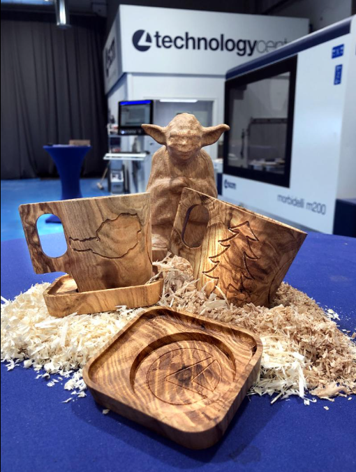
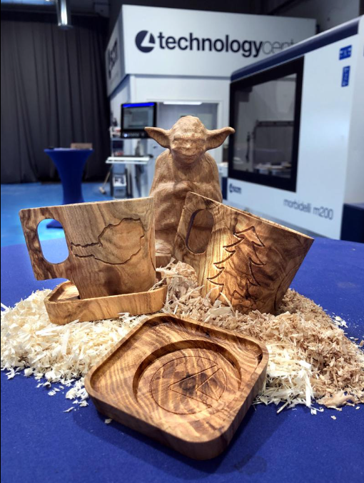
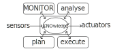
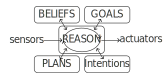

Engineering robust software in the Internet of Industrial Things
Context
From the literature
Rapid evolution of software systems:
- Internet of Things (IoT)
- artificial intelligence techniques
- adoption of novel development processes
- heterogeneous hardware
Industry 4.0
- Introduction of Cyber-Physical Systems (CPSs) in manufacturing production process Cyber-Physical Production Systems (CPPSs)
- Increased software complexity
- Increasing heterogeneity of devices
New keyword Internet of Industrial Things (IIoT)
The Internet of Industrial Things
Additional challenges typical of manufacturing systems:
- Heterogeneity of devices
- Hyper-distribution of data (Edge-Cloud Continuum)
- Robustness to faults (Self-Healing-Fault-Tolerant techniques)
- Predictive maintenance
- Role of AI and ML in optimizing manufacturing processes
Seems the perfect fit for SASO systems :)
SASO systems
- Autonomic Computing research area
- Aim: Complex and reliable behavior achieved through the interaction of multiple agents
- Achieved through self-management properties:
- self-configuration
- self-optimization
- self-healing
- self-protection
- …
- MAPE-K feedback loop to help achieve properties in system implementation
Beautiful story or reality ?
From the industry
- Even if promising, applications in the industrial context are limited
- We observed a huge gap between the state-of-the-art and the state-of-the-practice in manufacturing software systems
Filling this gap is the aim of this project

Industrial case study
- This gap is felt in the industrial environment
- We have an active collaboration with SCM Group, a world leader in producing large woodworking machines.
Industrial case study
 

Industrial case study
- Managing hybrid
LinuxandWindowscomputing environments - Software maintenance is a challenge due to manual configurations and third-party dependencies
- They need their software system capable to:
- autonomously update their software systems when newer updates are released
- finely control the operating system version
- automatic porting of configuration files between OS/software versions
- autonomously act in case of failures during this procedure
- avoid manual intervention for this process
- allow software to run on outdated hardware (manufacturing machines have longer lifecycle than software)
Challenges in this case study
-
Deployment: Managing long-lived industrial hardware while keeping software updated. Development process is supported by modern techniques (DevOps), but no general tool for deployment. The deployment process may fails, thus a rollback procedure that bring the machine back to the latest working version is required.
-
Heterogeneity: Handling diverse hardware and software environments across different factories. Manufacturing software systems must run for a long time, increasing risk that deployment may fail.
-
Dependencies: Ensuring compatibility between
- software versions
- software and operating system
- software and dependencies (can be ranges of compatibilities)
-
Critical Environment: Minimizing downtime and maximize reliability in production environments
- dependability concerns (availability, reliability, maintainability, safety)
- security
Goal
Reduce the gap between state-of-the-art and state-of-the-practice for
Developing autonomous, self-updating, and fault-tolerant
manufacturing software systems
Methodology
How to approach this gap.
Approach:
-
Top-down: Enhancing state-of-the-art SASO systems for adoption in industrial software
-
Bottom-up: Developing SASO systems to face practical problem in manufacturing
Preliminary results
The big picture
Published
Workshop:
- Pianini D., et. al. (2024). Multi-Paradigm Integration for the BDI Resurgence. 2024 IEEE International Conference on Autonomic Computing and Self-Organizing Systems Companion (ACSOS-C), Aarhus, Denmark, 2024
- Baiardi M., et. al. (2024). On the External Concurrency of Current BDI Frameworks for MAS. In: Engineering Multi-Agent Systems. EMAS 2024.
- Baiardi M., et. al. (2023). Infrastructures for the Edge-Cloud Continuum on a Small Scale: A Practical Case Study. 2023 IEEE International Conference on Autonomic Computing and Self-Organizing Systems Companion (ACSOS-C), Toronto, ON, Canada, 2023
Doctoral Symposium:
- Baiardi M. (2024). Supporting Autonomic Computing via BDI Tooling. 2024 IEEE International Conference on Autonomic Computing and Self-Organizing Systems Companion (ACSOS-C), Aarhus, Denmark, 2024
- Baiardi, M. (2023). A Step Forward to Widespread BDI AOP: JaKtA. In: Multi-Agent Systems. EUMAS 2023
Main Conference:
- Grushchak D., et al. (2024). Decentralized Multi-Drone Coordination for Wildlife Video Acquisition. 2024 IEEE International Conference on Autonomic Computing and Self-Organizing Systems (ACSOS), Aarhus, Denmark, 2024
- Baiardi M., et. al. (2024). Concurrency Model of BDI Programming Frameworks: Why Should We Control It? In Proceedings of the 23rd International Conference on Autonomous Agents and Multiagent Systems (AAMAS ‘24)
- Baiardi M., et. al. (2023). JaKtA: BDI Agent-Oriented Programming in Pure Kotlin. In: Multi-Agent Systems. EUMAS 2023
Journal:
- Baiardi, M., et al. (2024). Blending BDI Agents with Object-Oriented and Functional Programming with JaKtA. SN COMPUT. SCI.
Accepted
Doctoral Symposium:
- Baiardi, M. (2024). Validation of BDI MASs via Simulation. 2024 IEEE/ACM 28th International Symposium on Distributed Simulation and Real Time Applications (DS-RT)
Under review
Conference:
- Aguzzi G., et. al. (2025). A Demonstrator Toolchain for Self-organizing Robot Teams. In: Coordination Models and Languages.
- Baiardi M., et. al. (2025). Self-healing long-term maintenance of large-scale manufacturing machines.
Book chapter:
- Baiardi M., et. al. (2025). JaKtA: Better Tools for a Mainstream BDI. In: Agent Toolkits: Yesterday, Today and Tomorrow
Journal:
- Baiardi M., et al. (2025). Using Discrete Event Simulation to Test BDI Systems Before Deployment. In: Auton. Agents Multi Agent Syst.
Top-down: SASO programming frameworks
SASO Systems Autonomic Computing MAPE-K general loop
- No standard implementations for MAPE-K
- No programming framework to adopt it
A different agent-base approach coming from a neighboring community goes the opposite direction
- formal abstract semantics definition for their loop
- several programming frameworks and languages available to adopt its
Beliefs, Desires, Intentions (BDI) MAS
—
[1] Pianini D., et. al. (2024). Multi-Paradigm Integration for the BDI Resurgence. 2024 IEEE International Conference on Autonomic Computing and Self-Organizing Systems Companion (ACSOS-C), Aarhus, Denmark, 2024
[2] Baiardi M. (2024). Supporting Autonomic Computing via BDI Tooling. 2024 IEEE International Conference on Autonomic Computing and Self-Organizing Systems Companion (ACSOS-C), Aarhus, Denmark, 2024
BDI
- Multi-Agent systems community
- Terms originally introduced by philosopher Michael Bratman to describe human-based decision making
- Procedural Reasoning System general loop
- AgentSpeak(L) abstract semantics
- Several language implementations available
Agents are describes through:
- Beliefs: knowledge of the agent about the environment
- Desires: goals the agent pursues
- Intentions: (not explicit) intentional state of the agents, actions he is committed to down
- Plans: set of tasks the agent is capable to down
Do you see now the similarities?
 Why not take BDI as implementation framework for SASO systems
—
[1] Pianini D., et. al. (2024). Multi-Paradigm Integration for the BDI Resurgence. 2024 IEEE International Conference on Autonomic Computing and Self-Organizing Systems Companion (ACSOS-C), Aarhus, Denmark, 2024
[2] Baiardi M. (2024). Supporting Autonomic Computing via BDI Tooling. 2024 IEEE International Conference on Autonomic Computing and Self-Organizing Systems Companion (ACSOS-C), Aarhus, Denmark, 2024
Top-down: BDI as a programming framework for SASO systems
- we investigated the reasons why BDI frameworks are not considered viable for implementing SASO systems
- we understood that the available technologies were not sufficiently suitable to satisfy today’s needs.
Reasons:
- Learning curve vs. Ergonomics
- Development Tooling
- Middleware/Runtime Requirements
- Concurrency model

—
[3] Baiardi, M. (2023). A Step Forward to Widespread BDI AOP: JaKtA. In: Multi-Agent Systems. EUMAS 2023
[4] Baiardi M., et. al. (2023). JaKtA: BDI Agent-Oriented Programming in Pure Kotlin. In: Multi-Agent Systems. EUMAS 2023
Top-down: A novel BDI framework for SASO systems
Development of JaKtA, a BDI (Beliefs-Desires-Intentions) Multi-Agent System framework
Reduce developers’ barriers to learning the BDI paradigm by:
- Providing BDI abstractions to a large community of developers with
- Offering an ergonomy akin to the one of a dedicated programming language (Kotlin internal DSL)
- Inheriting the existing tooling of Kotlin
- Multiplatform compilation using a single and shared code base;
- Decoupling BDI entities’ definition from their execution.
—
[5] Baiardi, M., et al. (2024). Blending BDI Agents with Object-Oriented and Functional Programming with JaKtA. SN COMPUT. SCI.
Top-down: Concurrency management for BDI systems
- concurrency management is crucial when dealing with heterogeneous manufacturing systems
- state-of-the-art BDI tooling hides these decisions under their implementations
- we identified this lack in the BDI toolings [6]
- we defined external concurrency in BDI frameworks [6,7]
- we classified available tools upon this definition [7]
—
[6] Baiardi M., et. al. (2024). On the External Concurrency of Current BDI Frameworks for MAS. In: Engineering Multi-Agent Systems. EMAS 2024.
[7] Baiardi M., et. al. (2024). Concurrency Model of BDI Programming Frameworks: Why Should We Control It? In Proceedings of the 23rd International Conference on Autonomous Agents and Multiagent Systems (AAMAS ‘24)
Top-down: Simulation as a validation tool for BDI systems
- Manufacturing SASO systems are running in non-deterministic environments
- a way to correctly identify runtime issues ahead of deployment is fundamental
- Simulation-based validation for real-time distributed systems
- Evaluation of existing options for simulating BDI systems
- Evaluated all possible mappings between DES events and BDI events
—
[8] Baiardi, M. (2024). Validation of BDI MASs via Simulation. 2024 IEEE/ACM 28th International Symposium on Distributed Simulation and Real Time Applications (DS-RT)
[9] Baiardi M., et al. (2025). Using Discrete Event Simulation to Test BDI Systems Before Deployment. In: Auton. Agents Multi Agent Syst.
Bottom-up: SASO update system requirements definition
- One update system for all subsystems: the update system should centrally manage all software updates for the machine (including OS).
- Software Validation: A new level of testing introduced directly on the target machine.
- Multi-source Retrieval: Different machines, different network configurations
- Rollback-restore mechanisms: Automatic detection and management of failures that occur while a software bundle is being installed
- Downgrade-restore mechanisms: reverting the system to a previous working state after a successful upgrade
- Containerization and virtualization: to ease dependencies versions management
- Configurability: the update system must adapt to the destination industrial environment business process
Bottom-up: SASO Deployment lifecycle for manufacturing software systems
Bottom-up: Patent
- Even though the development process of the update system is still ongoing
- Italian National Patent (nr. S3196I-12IT3) entitled
“Metodo per installare una pluralità di software dipendenti in una macchina”.
Roadmap
Top-down: Logic-free JaKtA
- BDI programming frameworks are often associated with Logic Programming
- Logic programming never gained the popularity of other languages
- BDI model is general enough to define agents without rely on logical inference
- Investigating if separating Logic Programming from BDI frameworks would ease their adoption is worth a try
Top-down: Autonomic BDI
- More generic reasoning cycle towards integrating BDI and AC
- Detaching Logic Programming from BDI framework is propaedeutic to this
- In the future our framework would become an extensible and modular engine on which multiple autonomous entities can be modeled
Top-down: Macroprogramming BDI
- Create a MAS composed of individuals, that at certain point require to compute something as-a-whole, from the collective perspective of all devices.
- Some investigations were previously made in the literature, with the notion of aggregate plans for MASs
- Aggregate Computing / Organic Computing research area
Bottom-down: Virtualization
- Enhancing software deployment automation via virtualization and containerization
- finely manage the Os versions installations
- currently evaluating hypervisors performance for this task.
Bottom-up: Experiments
- Industry is finally testing our system proposal
- Collect information about the improvement of their release and deployment process
Conclusion
- Self-Healing-Fault-Tolerant techniques are fundamental for manufacturing software systems
- Still dealing on how to bridge the two branches under investigation